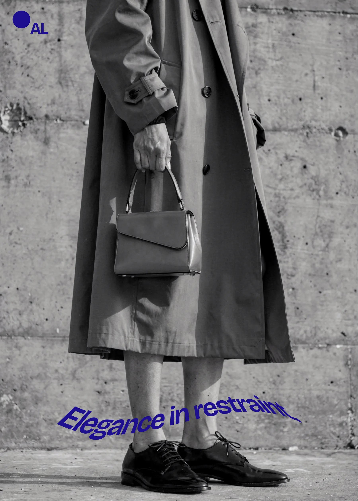
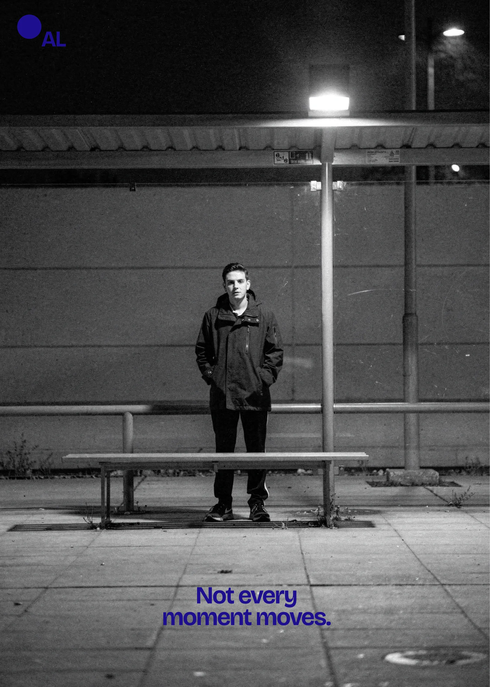
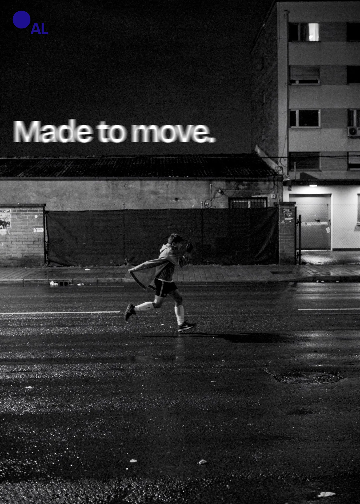
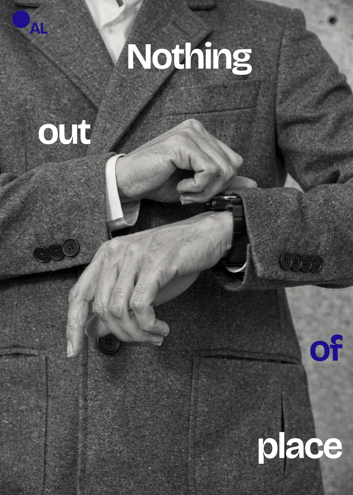
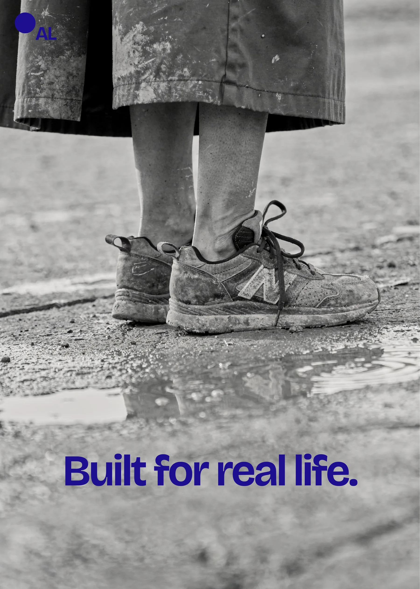

Campaign / Art Direction / Content [EDIT]
Built for real life
[EDIT: Write a short overview of this project and what it was created to accomplish.]

Challenge
[EDIT: Explain the challenge, brief, business goal, or creative problem behind this project.]
Approach / Idea
[EDIT: Explain the central idea, creative direction, strategy, or thinking behind the work.]
My role
[EDIT: Describe what you personally contributed.]
Outcome
[EDIT: Add results, performance, deliverables, learnings, business impact, or another meaningful outcome.]




